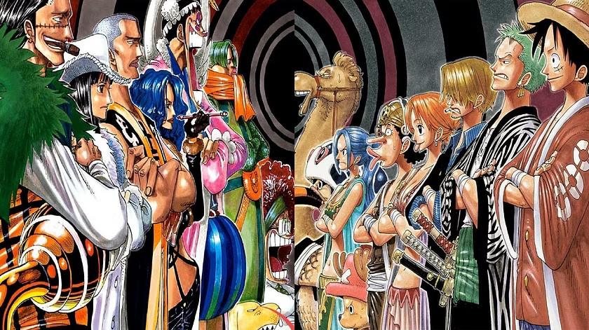
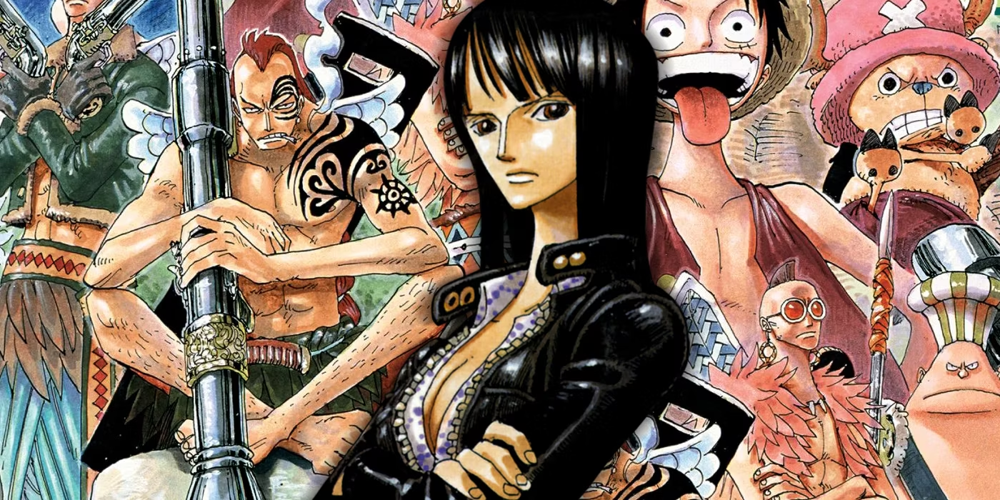
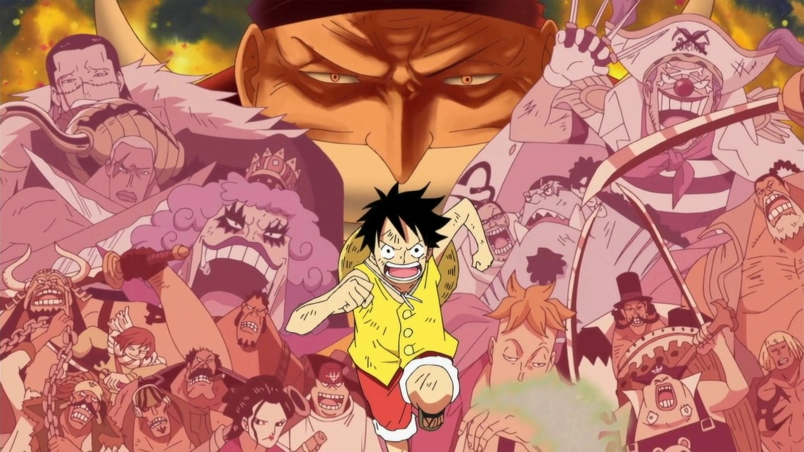
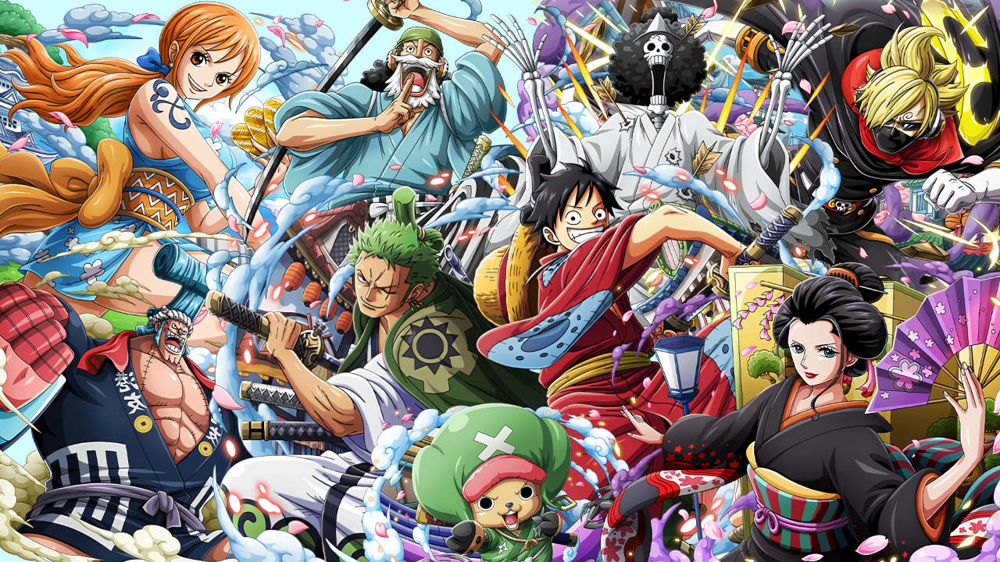

Sagas
Sagas de One Piece

Saga East Blue
A primeira saga de One Piece introduz os primeiros nomes da tripulação dos chapéus de palha. A saga começa no capítulo um, lançado em 1997, e vai até o capítulo de número 100. No arco Romance Dawn, Luffy conhece Coby e recruta Roronoa Zoro como primeiro integrante da tripulação. Em seguida, Usopp e Sanji entram para o bando, seguidos de Nami, que apesar de ter aparecido nos primeiros episódios, demora para ser recrutada oficialmente.
Arco de Romance Dawn: episódios 1 ao 4
Arco de Orange Town: episódios 5 ao 8
Arco da Vila Syrup: episódios 9 ao 18
Arco do Baratie: episódios 19 ao 30
Arco do Arlong Park: episódios 31 ao 44
Arco do Bando do Buggy: Após a Batalha!: episódios 46 e 47
Arco de Loguetown: episódios 45 e 48 ao 53
Arco do Dragão Milenar: episódios 54 ao 61 (filler)

Saga de Alabasta
A saga de Alabasta representa a entrada da tripulação na Grand Line, a corrente oceânica que corta o mundo de One Piece. Iniciada em 1999, no mangá, a saga introduz a Baroque Works, uma organização criminosa comandada pelo grande Corsário Crocodile, que quer dominar o reino de Alabasta. É nessa saga que o fofo Chopper e a bela Nico Robin entram para o bando do Chapéu de Palha e que também conhecemos Ace, irmão do Luffy que está em busca do Barba Negra.
Arco da Reverse Mountain: episódios 62 e 63
Arco de Whiskey Peak: episódios 64 ao 67
Arco de Coby e Helmeppo: episódios 68 e 69
Arco de Little Garden: episódios 70 ao 77
Arco da Ilha Drum: episódios 78 ao 91
Arco de Alabasta: episódios 92 ao 130
Arco pós-Alabasta: episódios 131 ao 135 (filler)

Saga de Skypiea, a Ilha do Céu
Após a épica jornada em Alabasta, os Chapéus de Palha se deparam com algo inacreditável: um oceano nos céus. Lá, eles decidem interferir em um conflito entre Povo do Céu e os habitantes nativos do Jardim de Cima, ilha que está em posse de Enel, um usuário da Akuma no Mi do trovão, e seus sacerdotes.
Arco da Ilha dos Carneiros: episódios 136 ao 138 (filler)
Arco da Névoa Arco-Íris: episódios 139 ao 143 (filler)
Arco de Jaya: episódios 144 ao 152
Arco de Skypiea: episódios 153 ao 195
Arco do G-8: episódios 196 ao 206 (filler que vale a pena)

Saga de Water 7/Enies Lobby
Após o confronto entre o deus do trovão e o homem-borracha, a tripulação retorna ao Mar Azul e encontra o Almirante Aokiji pela primeira vez. Em seguida, os Chapéus de Palha chegam na próspera metrópole de Water 7 e são acusados pela tentativa de assassinato do prefeito. Eles são pegos pela CP9, o grupo de assassinos do Governo, e Nico Robin é capturada. Nessa saga, Franky se junta ao bando.
Arco do Davy Back Fight (ou Long Ring Long Land): episódios 207 ao 219
Arco do Sonho do Oceano: episódios 220 ao 224 (filler)
Arco do Retorno de Foxy: episódios 225 e 226 (filler)
Arco de Water 7: episódios 227 ao 265
Arco de Enies Lobby: episódios 266 ao 312
Arco pós-Enies Lobby: episódios 313 ao 325

Saga do Thriller Bark
Os Chapéus de Palha navegam para a ilha assombrada de Thriller Bark, onde vão encontrar fantasmas, zumbis e Gecko Moria, um dos Shichibukai, grupo de poderosos piratas aliados do Governo Mundial. Brook se junta ao bando nesse arco.
Arco da Adorável Terra: episódios 326 ao 336 (filler)
Arco do Thriller Bark: episódios 337 ao 381
Arco da Ilha Spa: episódios 382 ao 384 (filler)

Saga da Guerra de Marineford
Da Red Line, a equipe tenta seguir para a Ilha dos Homens-Peixe, mas são derrotados no Arquipélago de Sabaody e enviados para ilhas diferentes. Luffy cai em uma ilha só de mulheres, comandada pela Shichibukai Boa Hancock e descobre que Ace está preso e será executado. De lá, o capitão dos Chapéus de Palha segue para Impel Down, na esperança de salvar Ace da morte. Ele enfrenta Magellan, o vice-diretor da prisão, e escapa ao lado de alguns fugitivos — mas sem Ace. Luffy então segue para Marineford, o quartel-general da marinha e se envolve na conhecida Guerra dos Maiorais.
Arco do Arquipélago Sabaody: episódios 385 ao 407
Arco de Amazon Lily: episódios 408 ao 421
Arco de Impel Down: episódios 422 ao 425
Arco do Pequeno-oriente Azul: episódios 426 ao 429 (filler)
Arco de Impel Down: episódios 430 ao 456 (continuação)
Arco de Marineford: episódios 457 ao 489
Arco pós-Marineford: episódios 490 ao 516

Saga da Ilha dos Homens-Peixe
Nessa saga iniciada em 2010, os Chapéus de Palha se reúnem novamente em Sabaody, dois anos após os eventos de Marineford, e dessa vez conseguem ir para a Ilha dos Homens-Peixe. Chegando lá, uma famosa cartomante prevê que Luffy destruirá a Ilha e a tripulação é novamente acusada injustamente. Enquanto isso, o homem-peixe Hody Jones tenta dar um golpe de estado para tomar o Reino Ryugu.
Arco do retorno a Sabaody: episódios 517 ao 522
Arco da Ilha dos Homens-Peixe: episódios 523 ao 574

Saga da Aliança Pirata
Em 2012, Oda mostrou a chegada da tripulação ao Novo Mundo. Lá, os Piratas do Chapéu de Palha recebem um chamado de socorro de uma ilha chamada Punk Hazard, onde encontram o recém-iniciado Shichibukai, Trafalgar Law. Em seguida, o bando descobre a conspiração para criar Akuma no Mi artificiais. Depois dessa aventura, Luffy é atraído para o torneio de gladiadores em Dressrosa, onde reencontra Sabo, outro irmão de criação. Após isso, o vilão Doflamingo prende todos em uma jaula gigante, e Luffy o enfrenta em uma das melhores batalhas do anime.
Arco da Ambição de Z: episódios 575 ao 578 (filler)
Arco de Punk Hazard: episódios 579 ao 625
Arco Recuperando César: episódios 626 ao 628 (filler)
Arco de Dressrosa: episódios 629 ao 746
Arco das Minas de Prata: episódios 747 ao 750 (filler)

Saga dos Yonkou/Imperadores
Em 2015, foi iniciada a saga mais recente do anime One Piece. O grupo chega a Zou, um elefante vivo de 1000 anos com uma ilha nas costas. Lá eles conhecem a Tribo Mink, que está se recuperando de um ataque de Jack, um dos homens de confiança de Kaido. Parte do bando parte para resgatar Sanji de um casamento e formam uma aliança para derrubar a vilã Big Mom. A perversa Imperatriz se alia a Kaido. A Aliança Ninja-Pirata-Mink-Samurai se reúne no País de Wano para enfrentar os vilões. Luffy enfrenta Kaidou e vence após um grande segredo sobre sua Gomu Gomu no Mi ser revelada. Ao final da batalha, Luffy se torna um dos Imperadores.
Arco de Zou: episódios 751 ao 779
Arco da Marinha Supernova: episódios 780 ao 782 (filler)
Arco de Whole Cake: episódios 783 ao 877
Arco do Devaneio: episódios 878 ao 889
Arco do País de Wano: episódios 890 ao 894
Arco do Rei do Ácido Carbônico: episódios 895 e 896 (filler)
Arco do País de Wano (continuação): episódios 897 ao 906
Episódio de Romance Dawn: episódio 907 (filler da primeira versão de OP)
Arco do País de Wano (continuação): episódios 908 ao 1028
Arco do Passado de Uta: episódios 1029 ao 1030 (filler)
Arco do País de Wano (continuação): episódios 1031 ao 1088

Saga Final
Após derrubarem dois Yonkou e salvarem o país de Wano, os Chapéus de Palha seguem em sua jornada em busca do One Piece. A próxima parada é na Ilha de Egghead, reduto e laboratório do mundialmente famoso cientista Vegapunk, sem saber que o cientista era alvo da CP-0. Enquanto isso, Trafalgar Law enfrenta o Yonkou Marshall D. Teach, o Barba Negra, e Eustass "Capitain" Kid chega a Elbaf, a Ilha dos Gigantes.
Arco de Egghead: episódios 1089 ao 1108